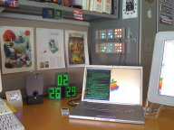

1.1.- Requisitos e instalación: Determinación del equipo necesario.
Caso práctico
En BK Programación el software que utilizan es el que los clientes demandan, aunque también hay empresas que piden asesoramiento sobre ello. Por ello, nuestros protagonistas tienen que conocer a fondo todos los productos software que el mercado ofrece en cuanto al área de las tecnologías web, sistemas operativos y demás aplicaciones de usuario relacionadas; ya que antes de poner en marcha una aplicación web, con frecuencia, hay que instalar y configurar los servidores que alojarán la aplicación y atenderán las peticiones.
María, encargada en muchas ocasiones de implantar los servicios web de los clientes, siempre se preocupa de conocer a fondo los requisitos y peculiaridades de instalación y configuración de las aplicaciones con las que trabaja, documentándose para ello.¿Qué ocurre cuando queremos instalar una aplicación software en el ordenador? En todo proceso de instalación se han de seguir unos pasos que describiremos a continuación. Si no se realizan adecuadamente podemos encontrarnos con un funcionamiento limitado o erróneo de la aplicación. Los pasos serían:
- Determinación del equipo necesario.
- Ejecución del programa de instalación.
- Configuración de la aplicación.
Determinación del equipo necesario

Lo primero que debemos hacer es conocer qué necesita la aplicación para que funcione adecuadamente en el ordenador, es decir, qué características o requisitos necesarios tendrá que tener el sistema informático. Cada desarrollador crea sus aplicaciones enfocadas a plataformas concretas, con unas necesidades de hardware y software necesarias para su funcionamiento. Una aplicación creada para una plataforma no podrá ser instalada en otra distinta. Tampoco podrá ser instalada la aplicación si nuestro sistema informático no cumple los requisitos mínimos. Antes de proceder a la instalación de una aplicación tendrá que reunir la información sobre el hardware de su ordenador y deberá verificar que su hardware le permite realizar el tipo de instalación que desea efectuar. Las características para que la aplicación se ejecute adecuadamente pueden ser de naturaleza hardware:
- Plataforma hardware: PC, Mac, etc.
- Procesador: fabricante, velocidad, generalmente se indica el inferior posible de la gama con el que la aplicación funciona adecuadamente.
- Memoria RAM mínima.
- Espacio mínimo disponible en el soporte de almacenamiento: por ejemplo, en disco duro o unidad de almacenamiento externa para aplicaciones portables.
- Tarjeta gráfica: la memoria gráfica necesaria para el buen funcionamiento de la aplicación.
- Resolución recomendada del monitor.
Y de carácter software:
- Plataforma software: sistema operativo bajo el que funciona la aplicación, Windows, Linux, etc.
- Otros paquetes software adicionales necesarios, tales como actualizaciones concretas de seguridad para el sistema operativo, la JVM (máquina virtual de Java), el Flash Player, etc. Por ejemplo, para instalar el editor de imágenes de Microsoft te indica que debes tener instalado varios componentes de Microsoft.
Teniendo en cuenta lo visto anteriormente, los fabricantes de aplicaciones informáticas suelen establecer tres niveles de requisitos para la instalación de sus aplicaciones:
- Equipo básico.
- Equipo opcional.
- Equipo en red.
Los requisitos del Equipo básico son las prestaciones hardware y software mínimas para que una aplicación pueda ser instalada y funcionar, por ejemplo, la plataforma software sobre la que se ejecuta el programa, el espacio necesario libre en disco, la cantidad mínima de memoria principal, etc.
Los requisitos del Equipo opcional son las recomendaciones de los fabricantes software para que un programa tenga un rendimiento mejor u óptimo, tales como, cantidad de memoria adicional, plataforma hardware recomendada, capacidad recomendada de la tarjeta gráfica, tipo de impresora, etc.
El Equipo en red hace referencia a las requisitos establecidos por el fabricante para que una aplicación funcione en red (configuraciones del servidor y los clientes, si existen limitaciones en cuanto al nº de clientes, etc).